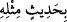
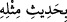

34. Eğer doğru iseler onun benzeri bir söz getirsinler.
“Eğer doğru iseler onun benzeri bir söz getirsinler.” Yâni iş onların iddiâ ettiği gibi
ise; Rasûlullah (s.a.) kâhin, mecnun yahut şâir olup risâlet iddiâsında bulunuyor ve
Kur’ân’ı da kendi nefsinden uyduruyor diyorlarsa Kur’ân’ın bir benzeri, nazım ve
mânâsı ile nev’i şahsına münhasır vasıflara hâiz bir Kur’an da kendileri uydursalar ya!
Tekmile adlı eserde müellif Kur’ân-ı Kerim’in daha yaygın olarak
(bihadîsin
mislihî) şeklinde tenvinli geldiğini ve burdaki zâmirin de Kur’ân’a âid olduğunu
belirtmektedir. Cuhdûri’den yapılan bir nakle göre de o __WORD__ (bihadîsi mislihî)
şeklinde izâfetle okumuş, buradaki zamiri de Nebi (a.s)’a ircâ etmiştir.
Onlar iddiâlarında doğru iseler onun gibi bir söz getirsinler. Zira onların bu husustaki
doğruluk dereceleri, kendileri gibi bir insan ve arap olan Peygamber (s.a.)’e, Kur’ân’ın
bir benzerini getirmeye muktedir olma açısından müşareketlerini yâni onunla aynı
konumda olmalarını içermektedir. Aslında onların vâkıaları ve önemli günleri
hıfzetmelerindeki yatkınlıkları, çeşitli hitap türlerine uzun zamandan beri alışık
olmaları, nazım ve nesir üslûblarını vurgulamaları ve bunu sıkça kullanmış olmaları da
bunu temin edebilmekte yardımcı unsurlardır. Ayrıca, şüphesiz ki bir şeyi yapmaya
kadir olma da onu yapabilmeyi ve onunla ilgili sebepleri bulmayı gerektirir.
Şunu da bil ki i’câz ya Kur’ân’ın fesâhat ve belâğatı açısından nazmıyla veyahut da
mânâsıyla ilgili olan yönüdür. Kur’ân’ın yazı karekterinin i’câzla bir ilişkisi yoktur.
Zira onun yazı stili arap lafızlarından oluşmakta olup bu lafızlar onların yabancı
olmadığı türdendir. Allah Teâlâ Kur’ân-ı Kerim’in yazı unsurunun Araplarınkiyle aynı
olduğuna ve Kur’ân’ın arapların kelamlarında kullandıkları terkiplere uygun olduğuna
işâret etmek için “Onu arapça bir Kur’an yaptık” (Zuhruf 43/3) buyurmuştur. Ancak
bununla birlikte Kur’an lafzı ve mânâsı itibariyle her vecihden mû’ciz bir kitaptır.
Lafzın i’câzı; teşbih-i garib, istiâre-i bedîî, harf ve kelimelerin tenâsübü, âyetlerin
fâsılaları, lafızların tecânüsü, kıssa ve olayların anlatımı, hikmet ve sırların
bulundurulması, isim ve fiillerdeki mübâlağa, maksad ve gayelerdeki hüsn-i beyân,
maslahat ve esbâbın giriş bölümleri ve olmuş-olacak haberleri verme gibi on iki
vecihle kemâl sınırına varıp bu yönleriyle belağat üstadlarından farkını ortaya
koymaktadır.
[52]. Müslim, Selam 125; Ahmed b. Hanbel el-Müsned, II, 429; IV, 68; V, 380.
[53]. Terğib, IV, 440-441.
[54]. Terğib, IV, 439.
[55]. Terğib, IV, 439.